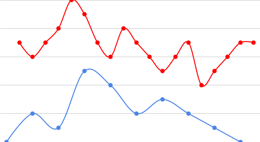

Interweaving Melodies
An Exploration of Counterpoint
What counterpoint is (on a basic level)
Counterpoint is the way two voices intertwine to sound "nice". To make music that has counterpoint, you need a point as well.
P.S. For more in depth information on each slide, click the down arrow (although it isn't necessary to do so to learn about counterpoint)Roots of counterpoint
 Counterpoint originates in the 9th century,
starting with the Gregorian Chant, a religious song that
would be similar to the Cantus Firmi that I'll get into later.
Counterpoint originates in the 9th century,
starting with the Gregorian Chant, a religious song that
would be similar to the Cantus Firmi that I'll get into later.
 The real blossuming of counterpoint was when Johan
Fux published his book "Gradus ad Parnassum" which
revolutionized counterpoint through polyphony. It is so integral to music as a
whole that even if you have
never listened to classical music, you likely hear it every
day. TAKE THAT Pop music! If you listen to voices (which don't have to be vocal)
that combine and have conflict, you've listened to counterpoint.
The real blossuming of counterpoint was when Johan
Fux published his book "Gradus ad Parnassum" which
revolutionized counterpoint through polyphony. It is so integral to music as a
whole that even if you have
never listened to classical music, you likely hear it every
day. TAKE THAT Pop music! If you listen to voices (which don't have to be vocal)
that combine and have conflict, you've listened to counterpoint.
The Point
For the "point" of the counterpoint I did and the counterpoint you'll hear about here, I used something called a Cantus Firmus, which is a simple melody that uses no dynamics (changes in volume), rhythm, and follows a strict set of rules (you can learn more below).If you were to visualize one of the ones I wrote, it would look something like this (this is an actual Cantus Firmus, the dots represent notes):
.png) Looking at this, you can see how it approaches the end by steps down and you also can see how
it has only one peak, so that we know that this Cantus Firmus is only one "mountain", which is
important as it maintains the balance of how (if we're running with this mountain metaphor) the
mountain positioned within the frame, like a good picture. We can also see how the slopes don't
just make large erratic jumps which might make the "mountain" harder to climb
Looking at this, you can see how it approaches the end by steps down and you also can see how
it has only one peak, so that we know that this Cantus Firmus is only one "mountain", which is
important as it maintains the balance of how (if we're running with this mountain metaphor) the
mountain positioned within the frame, like a good picture. We can also see how the slopes don't
just make large erratic jumps which might make the "mountain" harder to climb
How Cantus Firmi work
A Cantus Firmus is a simple line of whole notes that is useful for learning counterpoint. The reason that someone learns how to do Cantus Firmi is so that you learn about what all music is based on, dating back to the Gregorian chants I talked about in the "Roots of Counterpoint" section.Cantus Firmi 101
clearly the most useful skill ever, that you will definately use every day, especially if you don't write music
How to write Cantus Firmi, a step by step guide:- Chose a key (A minor, D major etc.)
- Write the tonic of that key (F for F major, G for G minor, etc.) as the first note
- Write notes after that that follow the rules of Cantus Firmi:
- 5ths and octaves are called perfect intervals
- No jumping by 4ths, 4ths are nasty
- Use perfect intervals sparingly
- have at least one step (not leap) in between leaps
- Use leaps, like perfect intervals, sparingly
- Approach the end with steps and leave the first note by steps
The Counterpoint
A counterpoint is something to make the piece of music interesting, to counter the point. In the counterpoint that I did, Second species two part counterpoint, there are only two voices, and only two against one rhythm (half notes against whole notes) We'll use the same Cantus Firmus, but now with a counterpoint on top. It looks like this: You can see the two against one and how the two voices sometimes look like reflections. The reflections are called contrary motion and they are something that you want to see a lot for the counterpoint.
The counterpoint music (audio)
This is what that counterpoint sounds like:Credits
You made it to the end! Congrats! I would like to thank these people:- My IMP Mentor - Mr. Chuck
- My music teacher who got me started on all this - Dan Sedgwick
- My Parents for being continually supportive